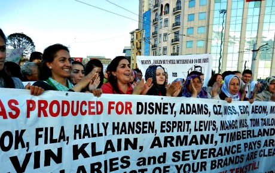
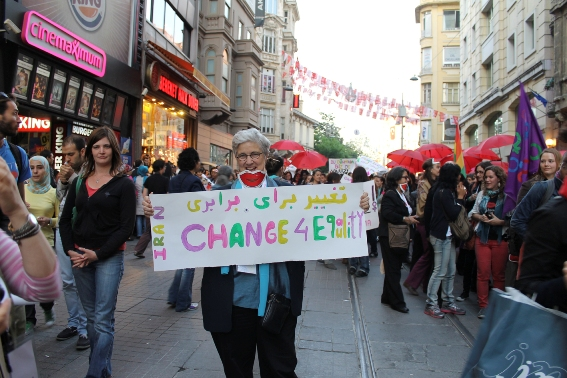

|
|

2500 زن در نشستی جهانی / گزارش دوم از ایوید 2012
سه شنبه12 اردیبهشت 1391
تغییر برای برابری - دوازدهمین کنفرانس دوره ایی سازمان ایوید AWID)، سازمانی که سی سال پیش با نام اتحادیه ی زنان در توسعه بنیاد گذاشته شده است)، این بار در شهر استانبول ترکیه در تاریخ 19-22 آوریل برگزار شد. تم اصلی این کنفرانس با توجه به بحران جهانی اقتصادی بی سابقه در جهان و رشد میلیتاریسم به مثابه تجارتی سود آور جهت رفع بحران، به بررسی راه حلهای اقتصادی از دیدگاه فمینیستی، مقابله با میلیتاریسم و همچنین بررسی مسائل انقلابهای عربی و دست آوردها و تنگناهای حاصل از رشد و میدان یابی بنیادگرایی مذهبی بود.

زنان از چهارگوشه دنیا، از کوهپایه های مکزیک و اوگاندا تا تبت و کلان شهرهای هند، آلمان، ژاپن و آمریکا، تاجیکستان و افغانستان...چهار روز در یک مجتمع بزرگ کنفرانس در دهها سمینار و گروههای کاری بدون تنش و یا حذف یکدیگر، بحث و گفتگو کردند. روز پایانی کنفرانس شرکت کنندگان رضایت خود را از اداره ی کنفرانس ابراز کردند. نماینده ی زنان معلول و آسیب دیده که به شکل متشکل در کنفرانس شرکت داشتند گفت:« این اولین بار است که در کنفرانسی با این ابعاد احساس کردیم که در حاشیه قرار نداریم و به نیازهایمان بی توجهی نشده است.» در کنار تم های اصلی کنفرانس که مربوط به اقتصاد، میلیتاریزم و مسائل کشورهای شمال افریقا و خاورمیانه بود، ده ها برنامه و گروه های کاری حول مسائل مختلف زنان بر پا بود. با توجه به عنوان اصلی کنفرانس یعنی مسائل اقتصادی، بخش قابل توجهی از شرکت کنندگان را زنان کارگر خانگی از جمله از ترکیه، اندونزی و فیلیپین، همچنین زنانی که در خانه های خود به کار تولیدی مشغولند و در حاشیه ی بازار کار قرار دارند، تشکیل می دادند. آنها از مسائل و تجربیات خودسازمانگری شان در اتحادیه های صنفی شان گفتند. زنان کرد، فلسطینی و بومیان متشکل و مبارز آمریکای لاتین نیز سمینارهای خود را داشتند. شرکت اقلیت های جنسی و دگرباشان از کشورهای گوناگون از جمله از مصر و دیگر کشورهای اسلامی نیز چشم گیر بود.

Lydia Alpizer Durán رییس اجرایی سازمان ایوید و از فمینیست های سرشناس دنیا، در سخنرانی افتتاحیه کنفرانس گفت که جنبش زنان طی سالهای اخیر در موضع تدافعی قرار داشته است. او گفت که زنان تلاش میکردند که دست آوردهای دهه 60 و 70 میلادی و سپس مصوبات کنفرانس پکن زنان سازمان ملل در سال 1995 را حفظ کنند. او اضافه کرد که این کار درستی بود که ما باید برای حفظ حقوقمان انجام می دادیم. اما حالا دیگر باید از دوره ی تدافعی گذر کرد، جهان نیازمند جنبش فمینیستی تعرضی است.
در بخش پایانی کنفرانس گروه کاری میلیتاریسم و عوارض آن برای زنان به جمع حاضر گفت که نظامی گری یکی از عمده ترین جنایات دوران ماست، هم به لحاظ آسیب هایی که به محیط زیست وارد می کند و هم به لحاظ تشدید نقض حقوق زنان. این تجارت فراگیر است و حاصل پیوند نئولیبرالیسم و استعمار نوین. نظامی گری تأثیر مخربی بر زندگی و حیات زنان می گذارد. پیشنهاد اصلی گروه کاری در رابطه با مبارزه با نظامی گری، همکاری جنبش جهانی زنان کشورهای نیم کره ی شمالی و جنوبی بود. زنان آمریکایی معتقد بودند که تمرکز دولت و مقامات آمریکا باید به جای اختصاص بودجه به اشغال نظامی عراق، کمک به اشغال فلسطین و دیگر کشورها و تولید اسلحه، بر اختصاص بودجه به بخش آموزش و سلامتی کشور باشد. آنها نیز براهمیت و کارایی همبستگی بینالمللی برای مبارزه با نظامی گری تأکید کردند. بسیاری از شرکت کنندگان از ایالات متحده در مورد مسئله ی خطر حمله به ایران و ضرورت مقابله با آن سخن گفتند.

یکی از مهمترین رئوس کار کنفرانس امسال ایوید بررسی عمیق بحران اقتصادی، نقش سرمایه داری و نئولیبرالیسم بر زندگی زنان و حیات جامعه ی بشری بود. در بخش پایانی کنفرانس سخنرانان بر این نکته تأکید داشتند که باید از خود بپرسیم که اساساَ هدف از اقتصاد و سیستم اقتصادی چیست؟ آیا هدف ایجاد زندگی بهتر برای بشر است یا انباشت ثروت برای بخش کوچکی از قدرت مداران؟ یکی از استراتژی های آینده ی جنبش فمینیستی به نظر شرکت کنندگان ایوید و اغلب سخنرانان اعم از فعالین جنبش زنان و پرفسورهای اقتصاد و متخصصین شرکت کننده، باید طرح این سؤال باشد که اقتصاد سیاسی موجود برای چه کسانی سودمندی دارد. آنها بر اهمیت روزافزون آموزش زنان در مورد اقتصاد سیاسی و شکلهای آلترناتیو تأکید داشتند. نکته ایی که با اقبال وسیع حاضرین در سالن هنگام مراسم پایانی و جمع بندی مواجه شد این بود که جنبش فمینیستی باید بر مبحث اقتصاد و تأثیر آن بر زندگی زنان متمرکز شود و کمپین گسترده ایی برای تغییر نظام اقتصادی موجود که منافع عموم زنان را در بر نمی گیرد، ترتیب دهد.
● بحران فعلی در جهان تنها بحرانی اقتصادی نیست. بحران عقاید هم هست. وقت آن رسیده که ما فمینیست ها برای ارائه ی آلترناتیوهای خودمان قدم پیش بگذاریم. در این زمینه کارهای نظری بسیاری شده و لازم نیست که از ابتدا آغاز کنیم. ما نیازمند ارائه ی اقتصاد فمینیستی به عنوان آلترناتیو خودمان هستیم. اما برای این کار باید ابتدا خودمان را متحول و آگاه کنیم. باید خود را به شکل جهانی متحد کنیم. ما باید زنان جهان را برای تغییر جهان متشکل و متحد سازیم.
●
یکی از برنامه های کنفرانس ایوید بزرگداشت فمینیست ها و فعالین جنبش زنانی که طی سال های اخیر درگذشته یا به قتل رسیده اند بود. عکس هاله سحابی در کنار عکس های زنان از کشورهای مختلف جهان دیده می شد.

پس از چهار روز نشست و گفتگو، قرار و آشنایی و ایجاد ارتباطات، زنان شرکت کننده در کنفرانس ایوید به مرکز شهر استانبول رفتند و در تظاهراتی با شکوه شرکت کردند. قریب به دو هزار زن از چهارگوشه ی دنیا با پلاکاردهایی به همه ی زبان ها در کنار زنان کرد و ترک با رقص و شعار، خواست هایشان را فریاد زدند. چند تن از شرکت کنندگان ایرانی کنفرانس نیز پلاکاردهایی در مورد خواست آزادی و برابری و مخالفت با حمله نظامی، خواست آزادی زندانیان زن از جمله نرگس محمدی تهیه کردند. این پلاکاردها از جمله پلاکارد "تغییر برای برابری"، توسط زنان از کشورهای مختلف حمل شد.

در حاشیه: تعدادی از زنان ایرانی مقیم کشورهای مختلف از سوی سازمان های زنان و حقوق بشری در این کنفرانس شرکت داشتند و برخی هم در پانل های بحث در مورد مسائل خاورمیانه و ایران گفتگو کردند. اما علی رغم حضور تعداد نزدیک به 15 نفر از ایرانیان در این کنفرانس، اقدام مشترکی برای برجسته کردن مسائل زنان فعال و زندانی صورت نگرفت. زنان از دیگر کشورها برای آزادی زندانیان زن امضا جمع کردند و با ارائه ی اطلاعات در میزهای مستقر در محل کنفرانس به افشای سرکوب زن در کشورهای خود پرداختند. بی شک جلب حمایت و توجه زنان فعال کشورهای گوناگون جهان در این زمینه می بایست به اندازه ی جلب حمایت مقامات کشورها برای جنبش زنان ایرانی اهمیت داشته باشد.